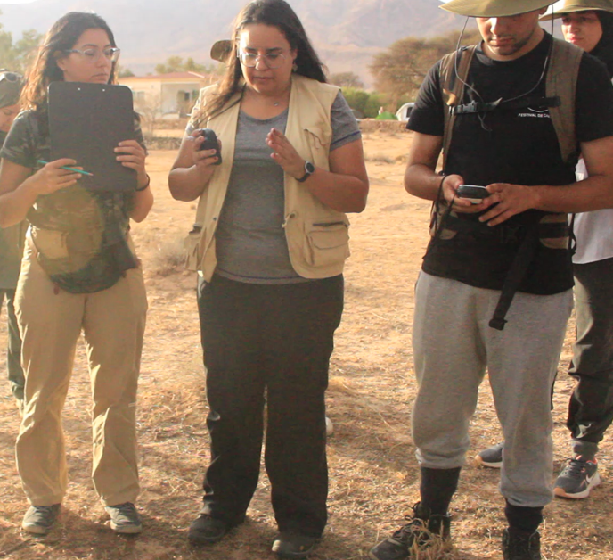
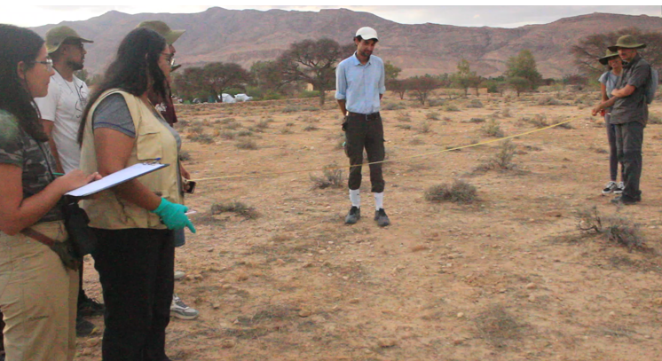
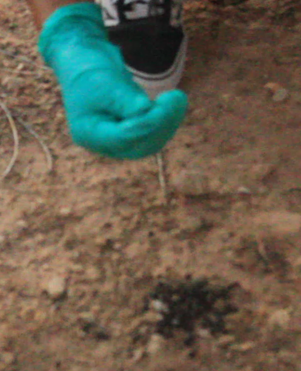
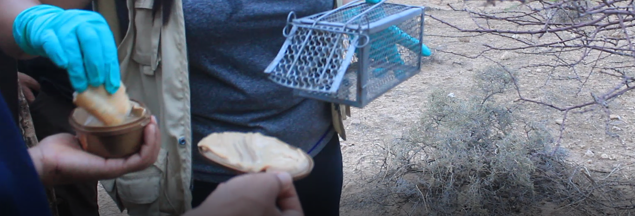
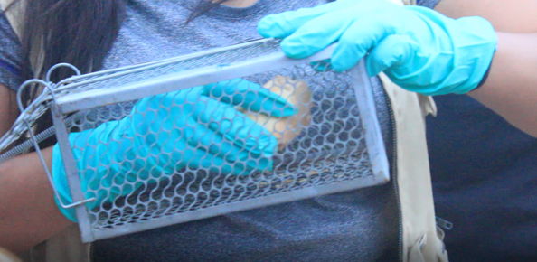
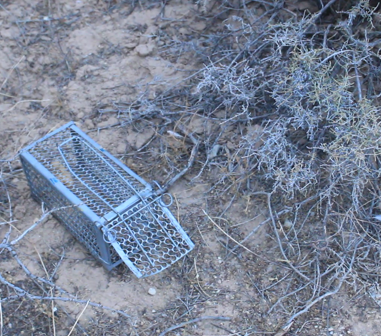
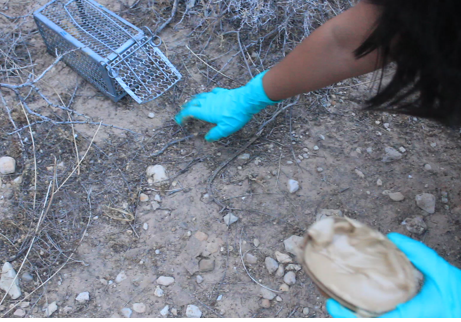
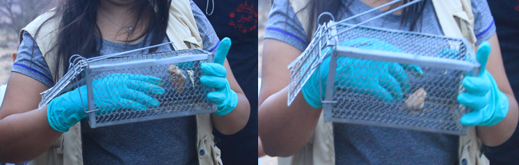

Rodent & Small Mammal Field Study Protocol
Session Lead: Ms. Faouz Kilani
Affiliation: ........................
Subject: ...........................
This field protocol establishes standard methodologies for monitoring small mammal populations, conducting spatial line-transects, recording indirect ecological signs (tracks, burrows, and scats), and deploying humane live-capture cage traps for health screening and parasite sampling.
1. Line-Transect Habitat Monitoring
Field transects require a synchronized team of 3 researchers walking abreast simultaneously, maintaining a strict spacing of 0.5 meters (1/2 meter) between each individual to ensure comprehensive ground coverage without missing subtle signs.
Team Role Assignments:
- Researcher 1 (GPS Navigator): Logs spatial coordinates, marks transect waypoints, and records distance/bearing measurements.
- Researcher 2 (Tracker / Observer): Scans ground vegetation, soil, and rock crevices to detect active burrows, run-paths, footprints, or fresh scats.
- Researcher 3 (Scribe / Data Logger): Records field attributes, environmental conditions, track age classification, and behavioral observations onto field datasheets.

Figure 1. Synchronized 3-person team conducting line-transect field survey with GPS positioning and field notebook logging.
2. Trace Detection & Spatial Data Mapping
Starting from the designated origin point, the GPS operator continuously logs track points. Whenever a sign of rodent activity (burrow entrance, footprint impression, or fecal pellets) is detected, its exact location and relative offset (distance and angular bearing from the center line) are measured.

Figure 2a. Measuring distance and bearing from the origin line.

Figure 2b. Glove-assisted age evaluation of fecal droppings.
3. Live Trapping & Health Monitoring Protocol
When active habitats or fresh burrows are identified, wire-mesh cage live traps (Sherman/Tomahawk style) are deployed nearby to capture individuals safely for health checks, tagging, or ectoparasite collection.
Bait Preparation & Mechanism:
Prepare a high-protein, high-calorie bait using bread coated with unsweetened peanut butter and sardines. Place the main bait securely inside the rear of the cage, and scatter a small trail of bait outside near the trap entry to attract animals toward the trigger plate. Once the animal enters and trips the plate, the spring door automatically seals.

Figure 3a. Preparing peanut butter and sardine bait.

Figure 3b. Loading bait into wire cage trap mechanism.
Ethical Welfare & Frequent Inspection Rule:
Traps must be placed under dense shade or protective cover, sheltered from direct sunlight and rain. Traps must be checked frequently (early morning and late evening) to prevent captured animals from suffering heat stress, dehydration, or mortality.

Figure 3c. Placing trap in shaded micro-habitat near cover.

Figure 3d. Putting peanut butter outside cage.

Figure 3e. cage trap door mechanism.